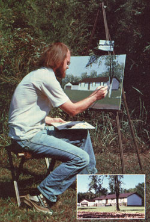

Many artists, though they might be very skillful, find it tough to sell even a few of their paintings - and such folks probably come to feel that actually makin' a living with paintbrushes is about as likely as striking oil in their back yards.
The problem, however, is that painters too often depict only subjects that appeal to them, as opposed to what a prospective buyer might want.
I, on the other hand, find it very easy to paint what my customers want to see, because I know that few objects are as dear to a person's heart as "home, sweet home" - whether the abode is an old family estate or a suburban tract dwelling. You see, I specialize in "house portraits," and any reasonably good brush wielder should have no trouble handling such a commission him- or herself (and can earn from $25 to $100 doing so). What's more, such art work can be interesting and creative (to paraphrase the old stage cliché: There are no small paintings, only small painters!).
It's not really difficult to land home portrait jobs, either. In fact, as a part-time"house painter," I get all the work I want from word-of-mouth publicity and the framed samples that are always hanging on my living room walls. So, even if you want to work full time, I see no reason why you shouldn't be able to locate plenty of jobs - especially if you live near a population center and run some advertising in the local newspaper and/or spend a few hours doing door-to-door self-promotion.
Once you've found a customer, get out a camera and take some pictures of his or her home. You can, if you prefer, set up your easel and work right at the site, but - because of potential problems with the changing light and shadow over the course of the day, or imperfect weather conditions - I find it much easier to use photos and paint at home.
Either prints or slides will do, but transparencies do allow you to project the picture directly onto your canvas and paint or charcoal in the main lines - thus saving time. Of course, it's also handy to have a close-up color print to tack above your painting surface, so you can easily check the building's details. It's important to take pictures of the house from several different angles, so you can be sure to pick that one "best view." Try, too, to "frame" the house (with trees that grow in the yard, for instance) to produce a more interesting composition.
After the photos are developed, you might want to let your customer help choose one view - and he or she can, at the same time, also designate the size the finished painting should be.
As for materials, I've done my depictions on canvas panels, stretched canvas and untempered masonite coated with gesso. I prefer to use acrylic paints, since they dry quickly and involve no messy cleanups. ( You should, of course, use whatever medium you're most comfortable with and knowledgeable about.)
When you paint your picture, you'll naturally want to make some small changes from the way the home and setting actually appear - since you're not attempting to make an exact likeness. (If a perfect reproduction is what the customer wants, you might as well just hand over one of your photographs.) And, in order to create a pleasing composition, don't hesitate to use your brush to prune off a few tree branches or eliminate utility wires. Also, leave out picky, little details like cracks in the siding - you'll not only save time, but end up with a better image.
Remember, too, that a proper frame can make a good painting look even better, and - while some homeowners prefer to choose this "setting" themselves - I enjoy matching the frame to my painting to make the finished product look just right. Besides, I'm a regular patron of art shops and can often save my customers a little money on such purchases.
Speaking of cash, the exact price you can ask for your paintings will depend on your skill, the cost of your materials, and the amount of time you spend. ( An "average" 18-by-24-inch picture takes me about eight hours to complete.) You might begin as I did and charge $25 (not including the cost of the frame) for your first efforts - and then, as you improve, raise the price to as much as $100, or maybe more, per picture! Just remember, if you give your customers value for their money, you'll be rewarded with plenty of work. Always keep in mind, too, that an offer to do a house portrait is hard to beat for opening up barter possibilities!
|
 MOTHER EARTH NEWS STAFF Painting house portraits can be a great way to make a little extra money. |
|
|